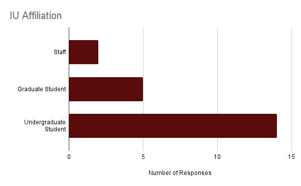

The Problem
Bus tracking is one of the most frequently used features in IU Mobile, yet user feedback consistently pointed to friction in everyday use. Critical information such as arrival times was hidden behind secondary interactions, and the full list of bus routes created visual clutter that made prioritizing relevant routes difficult. As a result, users often struggled to get the information they needed quickly while on the move.
Understanding User Needs
As a student intern on IU Mobile's design team, I was often asked to weigh in on how students might use or respond to new features. While I was able to provide insights from my perspective, I wanted to ensure design decisions were grounded in more than my own experience. To better understand how students actually used IU Mobile, and where friction existed, I proactively gathered direct user feedback to inform future design work.
Collecting User Feedback
I created a lightweight feedback form to collect qualitative input from students about their experiences with IU Mobile. The form focused on how they use IU Mobile and areas of friction they encountered, with questions like:
- What is your affiliation with IU (student, faculty, or staff)?
- How often do you use IU Mobile?
- What is your favorite thing about IU Mobile?
- What is your least favorite thing about IU Mobile?
- What is something you wish IU Mobile could do that it currently cannot do?
I distributed the form through informal student channels like social media and group chats, allowing me to quickly gather candid, experience-driven responses.
Feedback Analysis
I used Excel to perform descriptive statistical analysis on the feedback data, revealing overall trends in usage and satisfaction. This quantitative data helped establish a baseline understanding of who this feedback was coming from and how they were using the app, contextualizing the qualitative insights from the open-ended responses.
Analysis Results
The form received 21 total responses from undergraduate students, graduate students, and staff.
Likes
| Item | Mentions |
|---|---|
| Bus Tracking | 9 |
| Clock In/Out In App | 3 |
| Overall Convenience | 2 |
| Links to One.IU | 2 |
| Student ID Card | 2 |
Dislikes
| Item | Mentions |
|---|---|
| Frequent Logins | 7 |
| Loading Issues | 4 |
| Tapping Links Exits App | 4 |
| Search Functionality | 3 |
| Unintuitive Interface | 2 |
Desired Functionality
| Item | Mentions |
|---|---|
| Bus Data Improvements | 5 |
| Expanded Map Functionality | 3 |
| One.IU Features in IU Mobile | 3 |
| Canvas Integration | 2 |
Taken together, the quantitative results suggested that IU Mobile was broadly useful, but they did not capture how users experienced the app in real-world, time-sensitive moments. By synthesizing open-ended feedback, clearer patterns began to emerge around information visibility, navigation, and prioritization.
Key Findings
- Bus tracking information was hidden The most common functionality request was for bus tracking data — such as arrival times and schedules — to be easier to find. They explained this information was often buried in secondary interactions, making it difficult to find when needed.
- IU Mobile could expand features using data it already had Students use the bus tracking feature when they're on the move, and IU Mobile could have done more to support that use case. For example, they suggested push notifications for nearby buses and a home screen widget for recently used routes.
- Users were frustrated by technical limitations Many users expressed frustration with frequent login prompts and features that redirect to external web pages rather than being supported directly within the app. This feedback, while valid, was beyond the scope of this design effort so I documented it and passed it along to the development team.
Designing the Solution
With a clear understanding of where users were experiencing friction, I began exploring design solutions that could meaningfully improve the bus tracking experience. I focused my design efforts on opportunities to reduce friction, improve clarity, and better support time-sensitive use cases. Additionally, I wanted this work to lay a foundation for future map features like a bus route home screen widget.
Design Goals
- Improve information visibility: Surface arrival times and key bus data without requiring users to dig through secondary menus.
- Support fast, focused use: Optimize the experience for on-the-go use by surfacing relevant routes and minimizing distractions.
- Leverage existing data: Enhance the experience using bus data IU Mobile already had access to.
Constraints
- Interface complexity: The map screen was already visually complex, so new features needed to be simple and lightweight.
- Self-explanatory interactions: The IU Mobile design team follows a “no tutorials” philosophy, requiring new features to be immediately understandable.
- Production readiness: Designs had to be accessible, align with existing patterns, and remain feasible for development approval.
Design Exploration & Iteration
Starting Point
The pre-redesign experience featured a single route list organized in alphabetical order with selected routes displayed on the map.
- Routes could be toggled on and off to show or hide them from the map.
- Users could tap on a route to view more information about it on a separate screen.
- Tapping on a bus stop on the map would display the stop's name.
- Bus stops were not displayed in the list view.
Initial Ideation

To help users quickly find the routes they care about, I explored introducing a favorites system that would surface frequently used buses and reduce visual clutter.
- Favorites control: Add or remove routes from a personalized favorites list.
- Route details access: Users were often unaware of the details screen, so I proposed adding a button for better discoverability.
- Entire card acts as display toggle: Allow the entire route card to act as an on/off toggle.
- Onboarding: Introduce lightweight guidance for new interactions.
While the favorites concept resonated with design stakeholders, the extent of interaction changes and reliance on onboarding conflicted with existing design principles. I used this feedback to iterate on the design and move toward a more intuitive solution.
Iteration
Following the initial round of feedback, I refined the route card layout and began designing cards for bus stops. I also explored how these cards would fit into the broader context of the map screen.
- Updated favorites interaction: The favorite and route details buttons were moved to the bottom of the route card to maintain the existing interaction pattern.
- Adding bus stop cards: Since users often rely on bus stops more than routes, I designed cards for bus stops that include all routes that service the stop.
- Exploring broader interactions: I separated the list view into three sections: favorites, routes, and bus stops. This allows users to quickly navigate to the information they need.
These designs were met with positive feedback from both the design and development teams, who only requested minor visual adjustments. Reviewers also encouraged me to design for additional system states.
Final Design Solution
Using feedback from design and development reviews, I iterated on the proposed solution to refine key interactions and add additional system states. These revisions helped strengthen the overall usability of the experience and led to a final design that was approved for implementation.
ETA Visibility
The final design surfaces arrival times by elevating the role of bus stops within the interface. This allows for a location-based experience rather than a route-based one.
- ETAs appear on tooltips: For an intuitive map-based view, users can tap on a bus stop to see the routes that service it and their estimated arrival times.
- Bus stops tab: Users can view all bus stops in a list view and filter them by route. Nearby stops are listed first to help users quickly find the stops they need.
Favorites System
The introduction of a favorites system allows users to quickly access their frequently used routes and bus stops.
- Any route or stop can be favorited: Users can tap the heart icon on cards and in-map tooltips to add them to their favorites.
- Favorites tab is selected by default: When the map is opened, users will immediately see their favorite routes and stops for quick access.
- Horizontal scrolling: The original design listed all routes in a vertical list, leading to long scrolls. The favorites tab makes use of horizontal scrolling to control the page length.
Feedback & Handoff
This project was iterative in nature, involving weekly design reviews and multiple meetings with developers to ensure usability and feasibility. I presented these work-in-progress designs to gather feedback, clarify requirements, and surface potential implementation challenges early. This collaborative review process helped ensure the final solution was ready for implementation.
After final approval, I prepared detailed design documentation and implementation requirements in Jira. This included an annotated Figma file, acceptance criteria, Google Analytics specifications, and haptic requirements. I prioritized the "why" behind the solution to help the development team understand the context and intent behind the design decisions.
Status & Next Steps
The design has been approved and is currently in development. As the development team is working to implement the design, I will be providing ongoing support and feedback as they progress.
This work is laying a foundation for possible future features like favorites in other categories (buildings, parking lots, food, etc.) and a home screen widget for favorite bus routes. These will provide more opportunities for users to have a frictionless experience when they need to find information quickly.
Reflection & Takeaways
This project represented my most end-to-end contribution to IU Mobile, from early user feedback through final handoff for development. It challenged me to think beyond individual screens and consider how design decisions affected the broader system, technical implementation, and long-term product direction.
Lessons Learned
- Design is a translation process This project taught me to translate user feedback into concrete, implementable requirements. I learned how to advocate for user needs while clearly communicating technical considerations to developers.
- Comprehensive design requires systems thinking Developer feedback pushed me to think about how each interaction affected the broader system. This helped me design a more fluid experience that could hold up to more complex use cases and support future features.
- Iteration strengthens good ideas Regular feedback and refinement helped surface edge cases and usability gaps that were not obvious in early designs, leading to a more robust final solution.